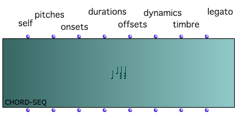
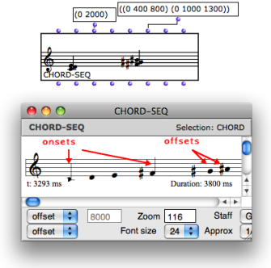
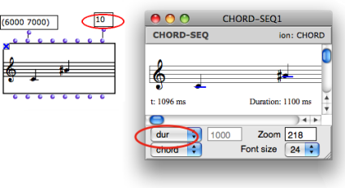

OpenMusic DocumentationHiérarchie de section : OM 6.6 User Manual > Score Objects > Presentation > Harmonic Objects
OpenMusic DocumentationHiérarchie de section : OM 6.6 User Manual > Score Objects > Presentation > Harmonic Objects
Navigation : page précédente | page suivante
Attention, votre navigateur ne supporte pas le javascript ou celui-ci à été désactivé. Certaines fonctionnalités de ce guide sont restreintes.
Notes, Chords and Chord-Seqs

|
There are three harmonic objects : notes, chords, chord-seqs. Chord-seqs are successions of chords.
|

A note, a chord and a chord-seq.
General Features
Parameters
Harmonic objects have a number of common parameters. Chords and chord-seqs have specific parameters.
| Objects | Parameter | Input Name | Value |
|---|---|---|---|
| All | Pitch | "midic" | Midicents |
| All | Dynamics | "vel" | 1 -> 127 |
| All | Duration | "dur" | Milliseconds |
| All | Timbre | "midichannel" | 1 -> 16 |
| Chords and chord-seqs | Offset | "offset" | Milliseconds |
| Chord-seqs | Onset | "onset" | Milliseconds |
| Chord-seqs | Legato | "legato" | Milliseconds |
The inputs order varies depending on their significance to the object.

Input Values

|
|

|
As chord-seqs rather expect sub lists, lists are converted into sub lists when outputs are evaluated. Here, the three first values of the output list stand for distinct chords. They are converted into sub lists. |
Note
The default data structure format can be checked by hovering the mouse over the inputs of a box.
Chord and Chord-Seq Specific Features
Offsets and Onsets
Chords and chord-seq have specific parameters : "offsets" and "onsets", which can become easily confusing.
- The onset represents the position of the first note of a chord .
- The offset represents the delay between this first note and the following note(s ). A chord can "unfold" in time, with an arpeggio for instance.
Offsets are visible when opening the editor of a chord or chord-seq.

Each chord of the chord-seq has one onset, and one offset per note.
Legato
A chord-seq has a supplemental input : the " legato " input. All chords have the same legato percentage. Hence, the "legato" input only accepts atoms. It is displayed in the score editor via the duration menu item of the editor control.
This value doesn't apply to notes or chords added subsequently via the score editor.

Displaying Parametric Values :
Chords and chord-seqs : Matching List Structures
The list structures of each slot of a chord or chord-seq don't have to be strictly similar. Objects manipulate the lists assigned to each of their parameters to produce compatible lists.
If lists don't have the same number of elements, shorter lists are completed to fit the longest list(s) :
- by repeating the last element
- by applying the same time difference to all elements, in the case of onsets .
If a list has too many elements, the last elements are suppressed.
In any case, pitches is the reference list.

The object returns compatible and coherent pattern.
Références :
Plan :
Navigation : page précédente | page suivante
A propos...(c) Ircam - Centre Pompidou